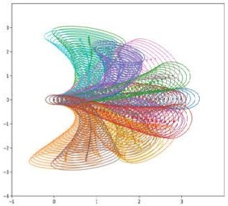
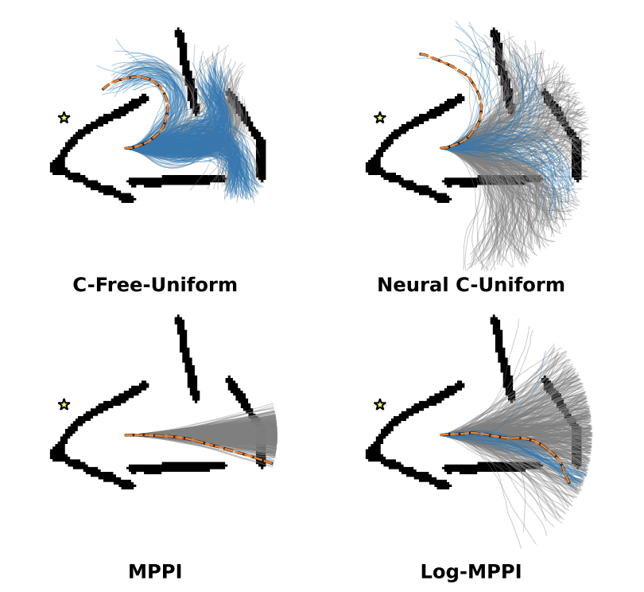
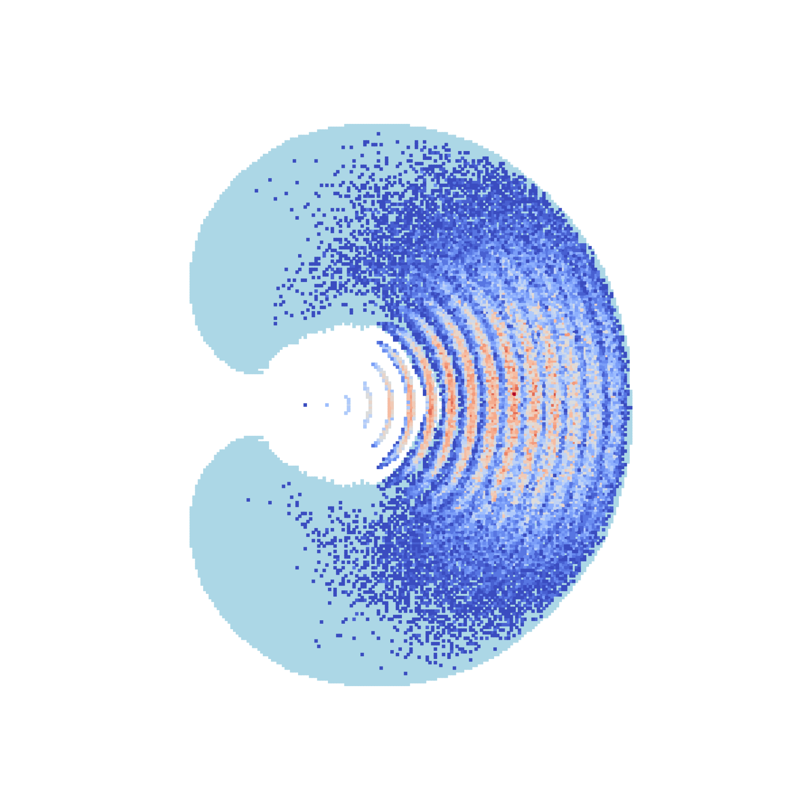
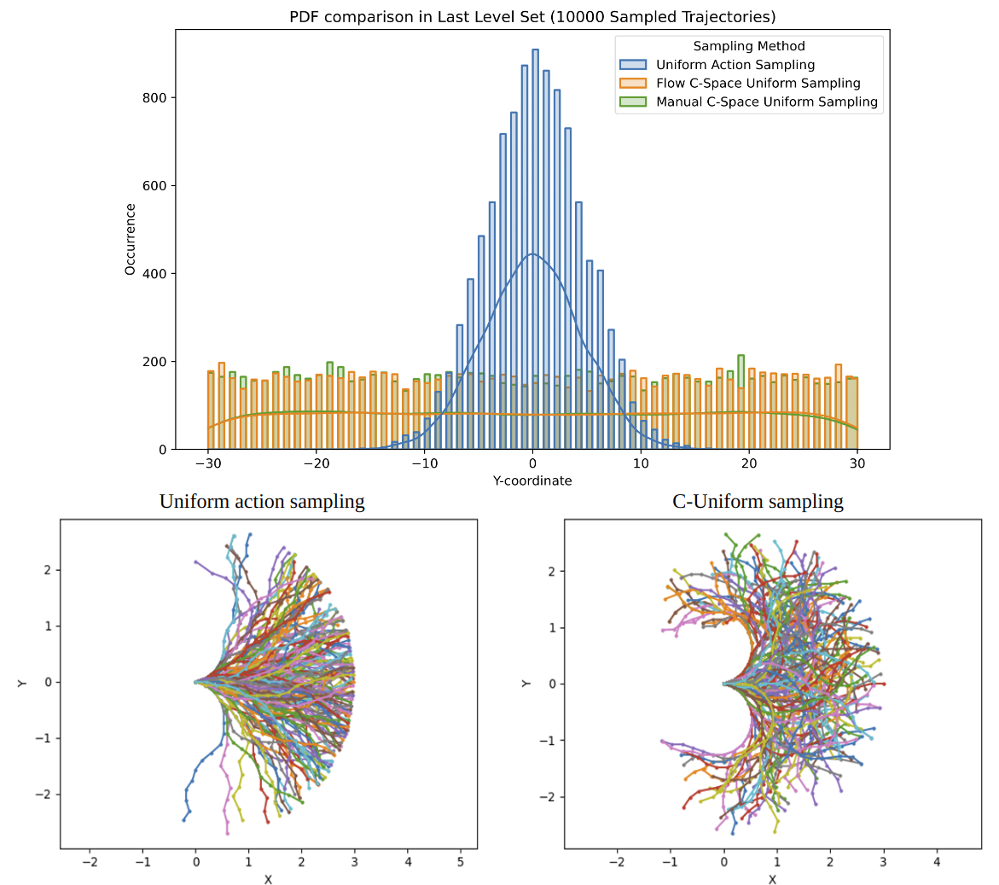

ICRA 2026
Uncertainty Guided Exploratory Trajectory Optimization for Sampling-Based Model Predictive Control
Uses uncertainty along each trajectory to explore a more diverse set of paths in cluttered environments.
I’m a Ph.D. candidate in computer science at the University of Minnesota, advised by Volkan Isler. I study how robots can find useful paths through cluttered spaces using trajectory sampling and model predictive control.
My recent work focuses on trajectory sampling for robot motion planning and control.

ICRA 2026
Uses uncertainty along each trajectory to explore a more diverse set of paths in cluttered environments.

ICRA 2026
Uses the robot’s local map to sample collision-free configurations for predictive control.

2025
Learns to sample reachable configurations without discretizing the configuration space.

2024 preprint
Generates trajectories that sample uniformly over the robot’s reachable configurations at each time step.